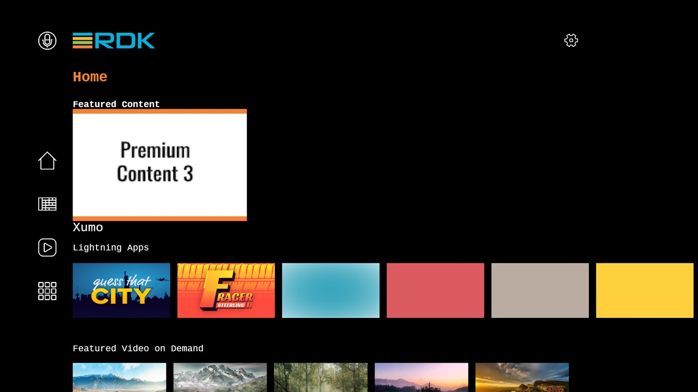
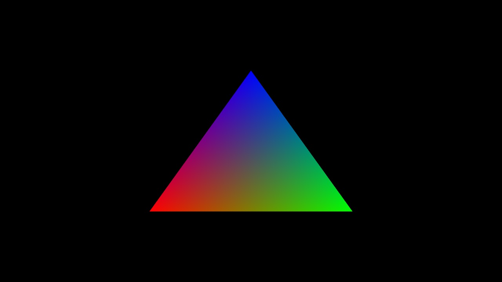
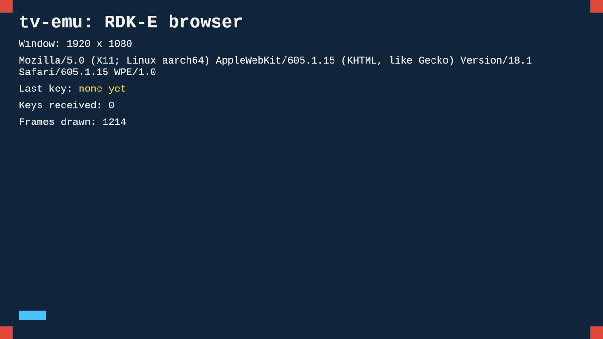
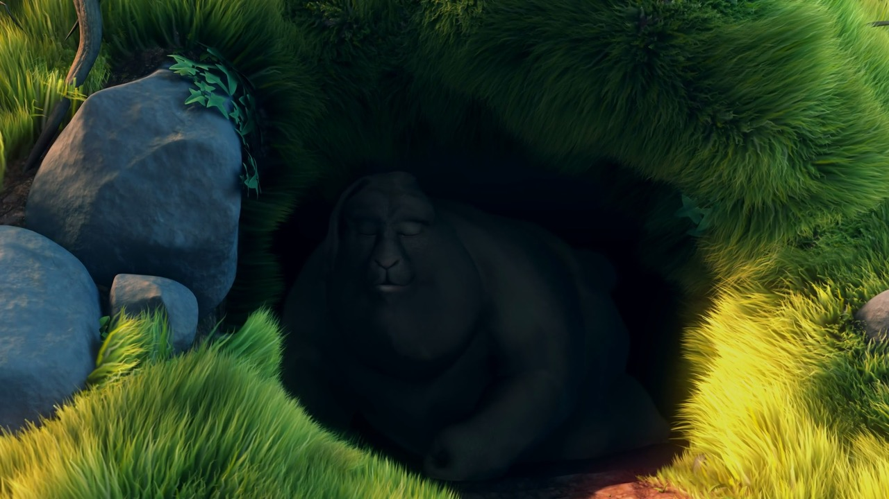

RDK's reference user interface (rdke-refui 5.0.24) at its Home screen in the emulator's window, 1920x1080, drawn by the VM's CPU. Captured on 2026-11-23 on macOS (ARM64), host-native.
An image of RDK-E, RDK's stack for IP video devices, boots in the emulator's virtual machine at the host's own CPU speed on two hosts: as an ARM64 machine on a Mac, and as an x86-64 machine on Linux with KVM. It runs Thunder with RDK's plug-ins, RDK's window manager on Westeros, the WPE browser, RDK's reference user interface, and video with sound through both the browser's own player and RDK's player (AAMP). It is steered with the emulator's remote control.
This is a trial and a proposal. No agreed requirement asks for RDK-E beyond the launcher option that boots such an image, and the image is outside the evaluation matrix. Nothing of it has been built or run on Windows, on an Intel Mac or on Linux on ARM64.
tvemu-arm64-rdke joins what makes a machine an RDK-E machine (taken from the Raspberry Pi 4 reference) with the hardware of QEMU's virt board (taken from qemuarm64) and the devices of the emulator's VM. Its twin tvemu-x86-64-rdke has the same RDK-E half on QEMU's q35 board (qemux86-64), for x86-64 hosts.llvmpipe draws and FFmpeg decodes, both on the VM's CPU. After three repairs in Westeros and the window manager's pacing, the display gets 60 pictures a second. On the Linux host the VM needs 8 CPUs for that during 1080p video, where the Mac needs 4, and an application has to hide the home screen under it, as the user interface does for those it starts. This is what a run gets unasked, except on a Mac with the experimental QEMU.--graphics host the host's GPU draws, and the launcher's own window shows that display on both hosts at 60 pictures a second: on Linux with QEMU 11, on the Mac with a patched experimental QEMU. The setup script builds either on request (--experimental-qemu), and the launcher takes the build by itself for such a run, on both hosts since 2026-11-25. On a Mac where that build is installed, an RDK-E image gets the host's GPU unasked since 2026-11-26. The VM's CPUs are then 79 to 99 % idle.| Area | State | Remark |
|---|---|---|
| Boot to RDK's user interface | works | Home screen 10 s after systemd starts. On the Mac a check finds no failed unit, no restart and no crash |
| Thunder and the middleware's plug-ins | works | Two plug-ins are deactivated, both by design (AVOutput is for televisions; nothing starts UserPreferences) |
| Graphics (Westeros, window manager, browser) | works | 60 pictures a second at the home screen on macOS and Linux; software rendering |
| Video and sound | works | H.264/AAC in the browser (checked automatically); HLS with AAMP (seen by hand) |
| Remote control keys | works | RedRat input is refused for this image |
| Applications from the Home screen | in part | Lightning and HTML applications start; YouTube, Netflix, Amazon cannot |
| Device interfaces (display, power, identity) | in part | Display, resolutions and identity are reported rightly and checked. CEC, deep sleep, Miracast, Bluetooth have nothing behind them |
| Reaching the target from the host | works | SSH, Thunder's JSON-RPC and the web inspector through forwarded ports, when a run asks for them |
| App managers and containers | not working | All activated; no packages, and four things the runtime needs are missing |
| Linux on x86-64, host-native | works | The x86-64 machine under KVM. All eight RDK-E checks of that host's record pass on 2026-11-26. rdke-rate passes since the check hides the home screen under the video: 59.5 pictures a second where it got 35 |
| Host GPU for the image | works | In the launcher's window on both hosts, at 60 pictures a second, checked automatically on both, with the experimental QEMU of each host, which the launcher takes by itself. macOS: what an RDK-E image gets unasked where that QEMU is installed; --graphics emulated asks for the other. Linux: on request with --graphics host; without the built QEMU 11 the host's QEMU 8.2.2 gives 30 |
| Windows, Intel Mac, Linux on ARM64, simulated CPU | not tried | Neither built nor run |
| RDK-E's own 32-bit userland | not built | Cannot run host-native on a Mac in any case |
RDK-E is built with Yocto (release "kirkstone") in three layers that RDK builds apart and joins as packages: vendor, middleware and application. A device is described by a machine definition and a vendor layer that implements the hardware side. RDK-E's public reference is the Raspberry Pi 4.
tvemu-arm64-rdke| Taken from | What |
|---|---|
The Pi's RDK-E machine (raspberrypi4-64-rdke) | The includes of RDK-E's common, middleware and application layers; the product settings (systemd, no secure video path, OpenSSL, application paths); the list of virtual providers the middleware expects; the kernel options RDK-E needs (binder, dm-verity, EROFS, AppArmor) |
openembedded-core's qemuarm64 | QEMU's virt board, the linux-yocto 5.15 kernel, the consoles, Mesa as the graphics stack, a bare ext4 root file system with the kernel beside it |
| Neither | The VM's devices built into the kernel (virtio disk, network, GPU, input, sound), /dev/dri/card0 as the display, Mesa with virgl and llvmpipe |
| Left out of the Pi's | Boot firmware, device trees, SD card image, Wi-Fi and Bluetooth firmware, Broadcom's graphics libraries, the Android kernel |
tvemu-x86-64-rdkeThe x86-64 twin is the same fusion with openembedded-core's qemux86-64 in the place of qemuarm64: QEMU's q35 board, the kernel as bzImage, the console on ttyS0, programs for the core2-64 tune, which every x86-64 host CPU runs. The RDK-E half is the ARM64 machine's, file for file, and the kernel options are split into one file for both boards and one for each. It was made on 2026-11-23 so that a Linux host on x86-64 runs RDK-E host-native under KVM instead of on a simulated ARM CPU. RDK-E has no public x86 build, so everything about it was found by building and running it.
The Pi runs a 64-bit kernel with a 32-bit userland, and RDK-E's package feeds are built that way. A host-native VM runs the guest's code on the host's CPU, and Apple's CPUs do not execute 32-bit ARM code at all. The machine has a setting, TVEMU_USERLAND, with 64 as the default. The value 32 is RDK-E's own arrangement, for a host whose CPU runs 32-bit ARM code or for a simulated CPU; it has never been built here. The x86-64 machine has 64-bit programs only.
One consequence: RDK's prebuilt middleware and application packages do not fit, so everything is built from source in one build.
| Image | Adds | Tasks | Root file system |
|---|---|---|---|
core-image-minimal | Kernel, glibc, BusyBox, RDK's systemd 230. Boots to a shell in about 2 s | 2379 | 57 MB |
tvemu-wayland-image | Mesa and Weston 10, as a stand-in compositor to prove the display | 248 MB | |
tvemu-westeros-image | Westeros 2.1.4 with its DRM backend, RDK's compositor | 226 MB | |
tvemu-thunder-image | Thunder 4.4.8 and the core services (rbus, IARM bus, telemetry) | 3186 | 147 MB |
tvemu-middleware-image | RDK-E's whole middleware package group on this layer's vendor components | 8145 | 639 MB |
tvemu-browser-image | WPE WebKit 2.46.2, the browser plug-in, the reference user interface, AAMP, a test page and a reference stream | about 975 MB |
The table is the ARM64 machine's, whose kernel is 21 MB. Task counts are those noted when each image was first built; an empty cell means none was noted. For the x86-64 machine only the browser image was built: 9004 tasks, a kernel of 10 MB and a root file system of 948 MB. The smaller images were not built for it one by one.

Westeros composing its own test client, the first proof of RDK's compositor on virtio-gpu (2026-11-20).

The image's test page in RDK's browser plug-in HtmlApp, which the check rdke-browser uses (2026-11-21).
Yocto's build tool (bitbake) runs on Linux only, and RDK-E's release wants Ubuntu 22.04, so on both hosts the build runs in the same container. One script does everything:
rdke/build.sh --middleware 64 tvemu-browser-image # the full image, for the host's CPU rdke/build.sh --arch x86_64 --middleware 64 tvemu-browser-image # or arm64: name the machine rdke/build.sh # the minimal image ./emu run --mode vm --rootfs rdke --window # start what was built
Without --arch the machine is the one whose programs the host's CPU runs: tvemu-arm64-rdke on the Mac, tvemu-x86-64-rdke on an x86-64 host. The launcher likewise takes the image of the guest's CPU architecture, and names the other one when only that is built.
tvemu-rdke-buildImage or bzImage (kernel) and rootfs.ext4--middleware)meta-rdk, meta-rdk-video, meta-middleware-generic-support, meta-rdk-oss-ext-middleware, meta-rdk-bluetooth, meta-python2, meta-oss-common-config--middleware the distro is RDK's own, so the build has its own directory and compiles the base system once more. The x86-64 machine has directories of its own beside the ARM64 one's.| Change | Why |
|---|---|
| Yocto's fake-root tool (pseudo) replaced, 1.9.0 to 1.9.3 | With RDK's version the first packaging step failed every time in this container ("got *at() syscall for unknown directory") |
| Yocto's own QEMU left out of the image build | Every image for a QEMU machine builds QEMU for the build host; the emulator has its own |
| LLVM: three compile jobs, one link at a time | The linker was ended for want of memory in an engine with 8 GB |
| WebKit: two compilers at a time, no link-time optimisation, 8 GB of swap added to the engine's VM | One source file took 5.4 GB to compile |
| Engine disk enlarged from 60 GB to 200 GB | The build volume held 38 GB after the Wayland image alone, 21 GB of it downloads. setup.sh still creates 60 GB |
git://github.com rewritten to https:// | Some RDK recipes name the git protocol, which GitHub no longer serves |
python made to mean Python 3 | A script of RDK's voice SDK is started as "python" |
Recipe work removed after each recipe (rm_work) | To keep the volume small. It also means sources for debugging have to be taken from the download mirror |
The first build of the full image takes hours; a change to one recipe took 8 to 25 minutes to rebuild and repackage on the Mac (6 CPUs and 8 GB for the engine). On the Linux host (Intel Core i7-10700K, 16 CPU threads, 8 bitbake threads) the x86-64 browser image built in 113 minutes up to WebKit and 68 more for WebKit. The changes in this table were made on the Mac; which of them the Linux host needed was not noted.
Not pinned: lib.sh fetches meta-vendor-raspberrypi-dev from its develop branch (for its configuration template only), and the middleware revisions are those of RDK's manifest on 2026-11-20. A later build may differ unless these are fixed to revisions.
RDK-E's middleware expects a vendor layer to provide ten things. A dry run of the build showed exactly that: every middleware recipe is public and parses, and 81 packages fall away for want of those ten providers and GStreamer. The Pi's implementations are written for Linux' own interfaces (DRM, ALSA, the kernel's CEC framework, sysfs) and not for Broadcom's, so this layer builds the same sources at the same releases and replaces only what is the Pi's.
What stands in for hardware that a VM does not have is a file of the "virtual device": /etc/tvemu for fixed things and /run/tvemu for things that change. The files can be read and written while the target runs.
| Component | In the VM | Seen working |
|---|---|---|
| Device settings | The display is virtio-gpu's connector (card0, "Virtual-1"). The front panel's LED, temperature and serial number are files | Connected display with its EDID; the LED went to 255 when the power state was set to ON |
| Display information | card0 | Connected, 1920x1080 |
| Manufacturer data | Serial number and revision from a file in the form of the Pi's /proc/cpuinfo | Serial number and hardware id in the answers of DeviceInfo and System |
| Power manager | The Pi shows its power state in the CPU's frequency governor; here it is a file. So is the temperature | STANDBY to ON changed the file; writing a temperature changed the thermal state the plug-in reports |
| Westeros' device backend | The Pi's recipe without its limit to the Pi's GPU; told that there are no planes | Drives the display at 1920x1080 |
| Westeros' video sink | The variant that takes decoded frames, since nothing decodes in hardware | AAMP plays through it |
System integration (sysint-soc) | Device properties (make tv-emu, model TVEMU), the unit the plug-ins wait for, the key map, the environment of Thunder's process | The window manager starts and opens the display |
| Deep sleep, HDMI-CEC, system audio, GStreamer utilities, Miracast | Unchanged from the Pi's | Built; not tried. CEC needs /dev/cec0, which the VM's kernel does not have |
| Audio service, protected-content elements, security API adapter | Empty, as on the Pi |
These faults at start-up came from steps that a vendor layer does for its images and this layer did not, from hardware the VM lacks, or from what a virtual device cannot have. The first four were found and repaired on 2026-11-23, the others on 2026-11-24, when the image was first reached over SSH from the host.
| Symptom | Cause | Repair |
|---|---|---|
| Dobby (the container daemon) ended with a segmentation fault | Dobby reads /etc/dobby.json. The middleware installs its settings as dobby.generic.json and leaves the naming to the image. Without the file Dobby prints defaults through a null pointer | The image names the file, as RDK-E's own test image does |
| "Failed to start SSH Per-Connection Server", every five seconds | RDK's start script ends unless a file names the directory of the host key, which a vendor's image writes | The image has the Pi's two image steps for it |
| The Bluetooth manager restarted for as long as the VM ran | The VM has no Bluetooth controller and its kernel no Bluetooth | The unit is disabled in the image; the package stays because others link against its library |
| The XCast plug-in's process ended with a segmentation fault | A 64-bit fault in the DIAL server's library (see the next section) | A patch |
| The journal held less than a minute | RDK-E keeps 3 MB of it in memory, which the middleware fills at once. What a unit did at start-up was gone before anyone could ask, and an earlier "no unit is restarting" was said of what was left | The image keeps 64 MB |
| The cloud client (parodus) aborted at every start and was started again every 40 s | It gets its server's address from a device's configuration, and a virtual device has none ("Bad webpa url"). Seen as soon as the journal held a start | Its units are not enabled in the image |
| The SSH server failed its first start in at least four boots of eight | Two units listened on port 22: RDK's always-running server and openembedded-core's per-connection socket. "Address already in use" at start-up; by hand the hand-over went well 20 times of 20, and why it did not at start-up was not found | The socket unit is not enabled. Clean in eight boots of eight after it |
| The current resolution was given as 720p, and no resolution as supported | Three causes behind each other: Westeros' backend starts its control socket only when it uses planes; the display has no description (EDID), since the launcher leaves QEMU's out; and the Pi's hardware layer gives its table of resolutions a count of 0 | Two patches to the hardware layer, one to Westeros' backend, and a description of its own for the virtual device. Now 1080p60, with both lists filled |
The layer has 17 source patches. They fall into three groups, shown in the last column: VM (the virtual device differs from the Pi), 64-bit (RDK's code assumes 32-bit ARM), and fault (a fault in RDK's code that would show on any device under the right conditions). Eleven are marked as fit to offer upstream; none has been offered.
| Component | Patch | Why | Kind |
|---|---|---|---|
| westeros-gl (device backend) | Frame buffer depth as a build setting, 24 here | virtio-gpu's one plane takes opaque buffers only; setting the mode failed with a frame buffer that has an alpha channel | VM |
| westeros-gl | No flip when no new buffer was swapped | At a window manager pace above 60 the refresh thread used a buffer it did not get, and Thunder ended on signal 11 | fault |
| westeros-gl | Refresh lock: one round for each picture, rounds timed by the clock | Each picture took two rounds of the refresh thread, and without vertical blank events a round was not a refresh interval long. This held the display at about 35 pictures a second | fault |
| Westeros (compositor) | Finish the drawing of a surface before its buffer goes back to the client | Mesa's software renderer draws only at the swap, when the client is already drawing into the buffer again: one picture in twenty lacked a part | VM |
| Westeros' video sink | Buffers of 32 bits per pixel | virtio-gpu makes no buffers of one byte per pixel; the request failed and the sink wrote to an unmapped address | VM |
| Device settings (hardware layer) | Virtual display and device files; handles widened at 136 functions | The display's names differ from the Pi's. And RDK's plug-in keeps handles in 32 bits, which loses half of a 64-bit address: no display was reported | VM, 64-bit |
| Manufacturer data | Identity and temperature from files | The VM has no serial number in a device tree and no thermal zone | VM |
| Power manager (hardware layer) | Governor and temperature from files | Without the CPU governor's file the component does not start | VM |
| OpenCDM plug-in | Clean up once when the plug-in cannot start | A second clean-up used a null pointer and ended the whole of Thunder | fault |
| TR-069 host interface | A length is a size_t | Eight bytes would be written into four | 64-bit |
| HDMI-CEC library | The reader waits when the driver is not open | Without a CEC adapter the reader thread kept one CPU busy | fault |
| Player interface (for AAMP) | A build without a device backend | RDK-E's way needs a library (FireboltAamp) that the public layers do not have | VM |
| DIAL server (xdialserver) | basename() declared before it is called | Undeclared, its result is taken as an int and the pointer loses its upper half; the first log message ended XCast's process | 64-bit |
| Westeros (renderer) | Video planes copied into textures where the renderer is virgl | The sink writes each frame through the CPU's memory into two buffers of the DRM device. With the host's GPU an image of such a buffer is the host's texture, which never gets what the guest wrote: the video was black | VM |
| westeros-gl | Display server started without planes too | The control socket that the hardware layer asks for the mode was started only in the code that looks for planes, which this image turns off | fault |
| Device settings (hardware layer) | Display description from the virtual device's file | Read where the connector gives none; the television's supported resolutions come from it | VM |
| Device settings (hardware layer) | The port type's count of supported resolutions | The table is named with a count of 0, and RDK's device settings plug-in takes the list from that table alone | fault |
| Change | Why |
|---|---|
| Format warnings are not errors, for all service plug-ins and five other components | By far the most common 64-bit issue: sizes and 64-bit numbers printed with formats that fit on 32-bit only, in recipes that make the warning an error. Nothing computed with is changed |
| WebKit built without branch protection | openembedded-core marks 64-bit ARM code as safe for branch target identification (BTI). WebKit's JavaScript interpreter is assembly without the landing instructions. An Apple CPU enforces BTI and the kernel ended the web process at the first script. A Pi 4's CPU has no BTI. An ARM64 matter only |
| Mesa's library names given to RDK's libepoxy | RDK patches libepoxy to take the names from a vendor layer; without them the web process ended at its first drawing call |
| Video decoders added to RDK's FFmpeg (H.264, HEVC, MPEG-2, VP8, VP9) | RDK builds FFmpeg with audio decoders only, since a device decodes video in hardware |
| AAMP and the player interface named for the build again | RDK-E's configuration for packaged applications takes them out of the middleware |
| The browser, its plug-in and backend named in the image | RDK-E's configuration takes them out as well (enable_bolt_apps) |
| App managers compiled as position-independent code | Otherwise they do not link into a shared library in a 64-bit build |
| Two GStreamer patches of RDK's left out; a cloud agent's 64-bit package taken | Both were inputs for 32-bit ARM only. The agent (xmidt) is published as packages, and each machine takes the one for its CPU |
| The 64-bit settings follow the userland, not the CPU | They were written for aarch64 and so did not hold for x86-64. They are now under one override, tvemu64, which the 64-bit userland sets for both machines |
| x86-64: WebAssembly turned on in WebKit | WebKit's optimizing compiler (B3) is on for x86-64 and does not compile without it; RDK's recipe turns it on for ARM64 only |
| x86-64: Ne10 taken out of the middleware's package group | A library for ARM's NEON instructions, whose recipe is for ARM only |
| x86-64: openembedded-core's sound feature taken out of the kernel | It made ALSA a set of modules after this layer's options, which left the target without a sound card |
| Two pointer-size warnings let through (rtRemote, device settings manager) | A pointer cast to a 32-bit number, and a callback whose handle is an int |
| ALSA's default device names the VM's sound card | The Pi's configuration names the Pi's HDMI sound card |
| Key map: EXIT and the four colour keys added | The Pi's map lacks their codes; EXIT arrived as "volume down" |
| Thunder listens on every address of the target | So that a forwarded port reaches its JSON-RPC interface, as RDK-E's own test image has it. The VM's network is QEMU's user-mode one: nothing reaches the target unless a run forwards a port |
| Journal of 64 MB; the cloud client and the second SSH listener not started | See "Start-up repairs" in the previous section |
The user interface's second call of setPowerState taken out of its script | The image starts at STANDBY by the middleware's design, and the user interface sets ON. When org.rdk.System is activated, about 50 ms later, its script sets the state it last read once more. In 14 of 120 boots on the Mac that reading was still STANDBY and the device stayed in standby; in the others the call set ON again or was refused. With the call taken out, 120 of 120 boots came up ON (2026-11-27). A change to RDK's released user interface, not reported to RDK; the x86-64 image does not have it until it is built again |
| Environment of Thunder's process (next section) | Display device, no planes, the window manager's pace, no external images, no Dolby in AAMP |
tvemu-rdkshell: a stand-in Thunder plug-in under the call sign org.rdk.RDKShell. The user interface in the image (5.0.24) starts every application with RDKShell, which this middleware no longer has. The stand-in answers its calls with RDK's window manager and the applications' own plug-ins. It keeps its lines in a file as well as in the journal: the image keeps 3 MB of journal, which the services fill in a minute or two, and on the Linux host the checks lost the line they waited for.tvemu-app-start: shows a page in one of the browser plug-ins, in place of RDKShell's "launch".tvemu-remote: turns the launcher's key lines into kernel key events.tvemu-first-run.js: marks the user interface's first-run steps as done, since the emulator discards what a target wrote and every start was a first run with a 30 s countdown.tvemu-device, tvemu-media, tvemu-browser-page: the virtual device's files, the reference stream with its pages, and the test page. The device's files now include a display description (a television named "tv-emu TV", 1920x1080 at 60, made by a script at build time). The media include the reference stream as an HLS stream and a page that plays it with AAMP, served by the image's own web server, since the browser gives AAMP's object only to pages with a host in their address.With emulated graphics, which is what a run gets unasked except on a Mac with the experimental QEMU, everything is drawn and decoded by the VM's CPU; the host's GPU as the one that draws has its own part below. The VM has one display device, virtio-gpu, which the guest sees as a plain DRM/KMS device with a single plane. That one fact shapes the whole chain: there is no video plane behind the graphics as on a set-top box, so Westeros composes video and graphics together with OpenGL ES.
westerosrawsinkllvmpipeOpenGL ES on the CPU, four threads/dev/dri/card0, 1920x1080 at 60, one planeThe display first got 22.6 pictures a second, and the launcher's window 6 to 7 of those. The drawing was never the limit. Six things were, in the order they were found:
| What held it back | Repair | |
|---|---|---|
| 1 | The launcher's window got each 8 MB picture through a Unix socket that takes 8 KB at a time on macOS | A loopback port at first, then QEMU's D-Bus display |
| 2 | QEMU's VNC server passes on 15 to 21 pictures a second whatever the client asks | The window follows QEMU's D-Bus display instead (emulator/dbusdisplay.py): first on macOS, and on Linux too since the work on that host, where VNC gave 23 to 24 pictures a second of a video |
| 3 | RDK's window manager waits a frame's time before each drawing, 25 ms by default | RDK_WINDOW_MANAGER_FRAMERATE=1000: a wait of 1 ms, so that the swap paces it |
| 4 | At a faster pace one picture in twenty lacked a part | Westeros finishes each surface's drawing (patch) |
| 5 | Each picture took two rounds of Westeros' refresh thread, and a pace above 60 ended Thunder | Two patches to westeros-gl |
| 6 | QEMU describes its monitor with a mode of 75 pictures a second | The launcher leaves the description out for this image (edid=off); the kernel then makes a mode at 60 |
Measured by hand on 2026-11-23 (macOS, ARM64, host-native, 4 CPUs for the VM): 59.9 pictures a second at the home screen and 59.8 to 60.0 while a 1920x1080 stream of 60 frames a second plays, the same number in the launcher's window. The VM's CPUs are 41 % idle during the stream, and QEMU takes 1.5 of the host's CPUs at the home screen and 2.6 during the stream.
Measured on the Linux host the same day (x86-64, Intel Core i7-10700K, host-native, pictures reaching the window in 10 s): 59.9 a second at the home screen with 4 CPUs, but 30.0 while Big Buck Bunny plays at 1920x1080. More CPUs for the VM raise that: 36 with 6, 56.5 with 8, 59.3 with 12. The next section says why, and what the launcher now does about it.
With --graphics host the guest's Mesa uses virgl in place of llvmpipe: its OpenGL ES calls go through the virtio-gpu device to virglrenderer in QEMU, which draws with the host's GPU. The image needed one patch for it (Westeros' renderer copies video planes into textures, 2026-11-24). The rest was the way from QEMU to the launcher's window, which is different on each host, and the pace at which QEMU lets the guest draw. Both were worked out in docs/frame-transfer.md.
| Linux, x86-64 (NVIDIA driver 595, X11) | macOS, Apple Silicon | |
|---|---|---|
| Before | The window got the display over VNC: 22.5 pictures a second of a video | Only QEMU's own window showed it, without toolbar and remote control keys, at 25 pictures a second with the rebuilt image |
| How the picture reaches the window now | QEMU's D-Bus display hands over the GPU's own buffer (a dma-buf), and the window draws it with OpenGL, without a copy (emulator/gui/gldisplay.py). Where the host's Qt or graphics driver does not take such buffers, VNC as before, with a note | macOS has no such buffers to hand over. QEMU reads each picture back from the GPU and sends its pixels over the D-Bus display, which the window draws as it does an emulated display. That is this project's patch to the experimental QEMU |
| What held the rate | The same thing on both hosts: QEMU answered the GPU's fences from a timer of 10 ms, and a picture needs several of them. The guest then hands over 30 pictures a second on Linux (QEMU 8.2.2) and 25 on the Mac, whatever the window does | |
| What lifts it | QEMU 11 with virglrenderer 1.1.2 or later, which answers them at once. Ubuntu 24.04 has neither. ./setup.sh --experimental-qemu now builds QEMU 11.0.0 with virglrenderer 1.3.0 from source into build/host/qemu, with the ARM emulators when --arm-targets is given | That way needs eventfd, which macOS lacks. The patch makes the timer 1 ms on macOS |
| What QEMU needed | One patch of 25 lines to the QEMU that the script builds (docs/linux-experimental-qemu.patch), for the shutdown fault below. In the launcher: the window listens before QEMU starts (QEMU 11.0.0 aborts otherwise), Vulkan is mapped only where the renderer was built for it, and the listener takes GPU buffers of more than one plane (QEMU 10.1 and later), which some drivers give a display | A patch of 262 lines, for macOS only (docs/macos-experimental-qemu.patch). Unpatched, the D-Bus display with OpenGL ends QEMU with a segmentation fault: OpenGL was used on another thread than the one that initialised it |
| Pictures a second in the window, home screen | 30.0 with QEMU 8.2.2; 60.0 with QEMU 11.0.0 | 60.1 |
| Pictures a second in the window, 1080p video | 30.0 with QEMU 8.2.2; 60.0 with QEMU 11.0.0 (Big Buck Bunny, by hand); 59.8 in the check of 2026-11-26 (the reference stream) | 60.0 (the reference stream in the browser). A 1080p clip of 60 frames a second, in the check rdke-rate-host-60: 60.0, and the player showed 59.0 frames a second and dropped 0 of 631. By hand before: 60.0, against 50.8 with emulated graphics |
| The VM's CPUs | 99 % idle at the home screen and 79 % during video in the check, with 8 CPUs | 97 % idle at the home screen and 84 % during video, with 6 CPUs. With emulated graphics in the same check: 70 % and 50 % |
| How it was verified | The check rdke-rate-host in the records of 2026-11-25 and 26, which says that OpenGL ES and Vulkan were mapped to the host's GPU; only the built QEMU 11 does that. The whole of ./emu verify was run twice on 2026-11-26, once with QEMU 11 for every VM and once as the host is set up | The check rdke-rate-host, with the QEMU that ./setup.sh --experimental-qemu built and installed on 2026-11-25; and since 2026-11-26 rdke-rate-host-60 with a 1080p clip of 60 frames a second. With the host's GPU unasked, the other RDK-E checks run with it too and pass, AAMP and the browser's own player with picture and sound among them |
| Set-up | ./setup.sh --experimental-qemu. Since 2026-11-25 the launcher takes that build by itself for a run with --graphics host, and only for such a run; EMU_QEMU_DIR naming it has every run use it. The build took 3 minutes and takes 675 MB on that host. Its package lists were tried in containers of four distributions; the build itself was run on that host only. Without it the host's own QEMU gives 30 | ./setup.sh --experimental-qemu. Since 2026-11-25 the launcher takes that build by itself for a run with --graphics host, and since 2026-11-26 for an RDK-E image that does not ask for emulated graphics. Third-party software built from source, never installed unasked |
What a run gets unasked. On a Mac where the experimental QEMU is installed, a host-native RDK-E image is drawn by the host's GPU since 2026-11-26, and the launcher says so; --graphics emulated asks for the VM's CPU, and without that QEMU nothing changes. The RDK-E checks on the Mac therefore run with the host's GPU, except rdke-rate, which asks for emulated graphics by name. Since 2026-11-26 six of them are run a second time with the graphics the image does not get unasked on the host (the checks named -other-graphics): emulated on such a Mac, the host's GPU everywhere else. On Linux and everywhere else emulated graphics stays what the image gets unasked. One fault found on the way on Linux is repaired in the built QEMU: QEMU 8.2.2 and 11.0.0 as released end on a failed assertion when an RDK-E target is shut down from inside while the window takes GPU buffers. With the patch, a display without a picture is reported to the window as switched off.
These are not results of the RDK-E image, but they say what its host's GPU path can carry.
video-host-vm plays every video codec through Wayland, OpenGL ES, Vulkan and Flutter with the host's GPU asked for: no frame of 125 dropped in the first three, 84 to 89 in Flutter, as with emulated graphics. Vulkan is drawn by the target's CPU there.--screenshot takes its pictures from QEMU's D-Bus display.Two players. A page's <video> element is played by WebKit's own GStreamer player, and WebKit draws the picture into the page itself. The user interface's video cards are played by RDK's player, AAMP, through bindings in the browser; AAMP's pipeline ends in Westeros' video sink.
Decoding is by FFmpeg in software, through GStreamer's FFmpeg plug-in. These are decoders of patented formats, which is why RDK leaves them out; that is a matter for whoever distributes an image.
The sink's frames arrive at Westeros as two buffers (brightness and colour). Mesa's llvmpipe draws such a two-plane image black, so OpenGL ES's external images are hidden from Thunder's process and Westeros converts the colours itself.

A 1920x1080 stream of 60 frames a second playing through AAMP from the user interface, captured from the launcher's window on 2026-11-23. Picture: Big Buck Bunny, (c) Blender Foundation, CC BY 3.0.
The launcher gives the VM an emulated sound card (virtio sound). In the guest, ALSA's default device is that card behind a soft volume control, which RDK's volume setting moves. QEMU hands the sound to the emulator's host-side sound process, which plays it on the host's output device. That process keeps at most a second of sound waiting, so a host device that takes no sound cannot stop the target. --mute and ./emu audio work as for the Debian target.
tvemu.remote; no network usedtvemu-remotemakes a uinput keyboard in the guestBoth columns are observed. RDK-E has been built and run on two hosts, each with the machine of its own CPU, host-native: macOS on Apple Silicon with the ARM64 machine, and Linux on x86-64 (Ubuntu 24.04.5, QEMU 8.2.2 with KVM, Intel Core i7-10700K with 8 cores and 16 threads, 2026-11-23) with the x86-64 machine. The Linux column is taken from the notes written on that host; nothing was run on it for this report.
| macOS, Apple Silicon | Linux, x86-64 | |
|---|---|---|
| Machine and guest | tvemu-arm64-rdke: QEMU's virt board, run by the Mac's hypervisor on the Apple CPU | tvemu-x86-64-rdke: QEMU's q35 board, run by KVM on the host's CPU. The kernel and init are up in 2 s |
| Where the Yocto build runs | In the Ubuntu 22.04 container inside the container engine's Linux VM (8 GB, 200 GB disk, swap added for WebKit) | The same scripts and the same container, on the host itself. The browser image: 9004 tasks, 113 minutes up to WebKit and 68 more for WebKit |
| Userland | 64-bit; the CPU cannot run 32-bit ARM code | 64-bit, the only one the machine has |
| Rendering | Where the patched experimental QEMU is installed: the Apple GPU, through ANGLE on Metal, unasked since 2026-11-26. Otherwise, or with --graphics emulated: the VM's CPU (Mesa llvmpipe) | The VM's CPU unless asked, by the launcher's choice. With --graphics host: the host's GPU, with the host's own QEMU or the QEMU 11 that the setup script builds |
| Display to the window | QEMU's D-Bus display over a private socket pair, as pixels. For a display the GPU drew, QEMU reads the picture back first | The same for a display the VM's CPU drew. One the host's GPU drew comes as the GPU's buffer and is drawn without a copy; VNC where the host does not take such buffers |
| Display mode | 1920x1080 at 60, with QEMU's monitor description left out | The same setting. Westeros' backend gets no atomic mode setting on this machine; why was not looked for |
| Pictures a second, home screen | 59.9 with 4 CPUs for the VM | 59.9 with 4 CPUs; 60.0 with 8 |
| Pictures a second, 1080p video, emulated graphics | 59.8 to 60.0 with 4 CPUs (a stream of 60 frames a second), the VM's CPUs 41 % idle | 30.0 with 4 CPUs, 36 with 6, 56.5 with 8, 59.3 with 12 (Big Buck Bunny, from the user interface). With the default of 8 the check rdke-rate got 35 until 2026-11-25, because it left the home screen visible under the video; with the home screen hidden it gets 59.5 to 60.0, the VM's CPUs 49 % idle |
| CPUs the launcher gives the VM | For an RDK-E image in a host-native VM, when --cpus is not given: half of the host's CPU threads, at least 4 and at most 8. That is 8 on the Linux host. The rule is new with the Linux work and was not run on the Mac | |
| Host GPU for the guest, in the launcher's window | 60.0 pictures a second at the home screen and during video, with the patched experimental QEMU; the VM's CPUs 97 % and 84 % idle. Unasked since 2026-11-26 | 30.0 with QEMU 8.2.2. With the QEMU 11.0.0 that the setup script builds, which the launcher takes for --graphics host: 60.0 at the home screen and 59.8 during video in the check, the VM's CPUs 99 % and 79 % idle. Over VNC it was 22.5 |
| Sound, keys | As described in the previous section | The same mechanisms. Sound through virtio-snd reached the host once the kernel's sound drivers were built in again |
| Checks | All sixteen RDK-E checks pass (2026-11-27, on the image with the power state repaired). The whole of ./emu verify: 145 of 159 pass, 4 fail, 10 could not be run. Eight of the ten were run later and pass, so the record has 153, 4 and 2 | All eight RDK-E checks of its record pass with the x86-64 image (2026-11-26). The whole of ./emu verify: 145 of 151 pass, 4 fail, 2 could not be run |
| Found on the Linux host | Cause and repair |
|---|---|
| The 64-bit fixes did not apply | They were conditions on aarch64. They now follow the 64-bit userland (override tvemu64) and hold for both machines |
| Two recipes had no x86-64 form | Ne10 (ARM NEON) is taken out of the package group; the xmidt agent is taken as its x86-64 package |
| WebKit did not compile | Its optimizing compiler needs WebAssembly, which RDK's recipe turns on for ARM64 only |
| The target had no sound card | openembedded-core adds sound options for qemux86-64 that make ALSA modules; that kernel feature is taken out |
| Thunder ended with a segmentation fault at its first start, in every boot | Without atomic mode setting, Westeros' refresh thread took the front buffer of a window that had none. systemd started Thunder again, but the user interface was gone in about half of the boots. The repair is one of the two westeros-gl patches, found on both hosts the same day |
| Video from the user interface was black, and the interface did not come back | Seen by the user with the host's GPU (virgl), which the launcher took on Linux at first. First avoided: the launcher gives an RDK-E image emulated graphics unless --graphics host is given. Then found and repaired on 2026-11-24: with virgl an image of a buffer that the sink wrote through the CPU's memory is the host's texture, which never gets the guest's bytes. Westeros' renderer now copies the two planes into textures there. Seen after it in two runs: the video plays with its picture and BACK shows the home screen |
| 1080p video at 30 pictures a second with 4 CPUs | The time is llvmpipe's: about 19 ms of drawing for a picture where a refresh is 16.7 ms, so every picture takes two refreshes. Holding the VM's CPUs on separate cores did not help, and neither did Mesa built for AVX2, since llvmpipe makes its drawing code at run time for the CPU it finds. More CPUs do help, hence the new default |
| The checks lost the line they waited for | The image keeps 3 MB of journal. The stand-in for RDKShell now writes its lines to a file as well, and the checks read both |
virgl included; that patch is what lets video play with the Apple GPU. The launcher's choices ran on the Mac: with half of the host's CPU threads the VM has 6 CPUs there.Not tried: the ARM64 image on the Linux host (it would run on a simulated CPU there), the x86-64 image on Windows or on an Intel Mac, and Linux on ARM64. On Windows the launcher shows a VM's display through QEMU's VNC server on a loopback port, which limited the picture rate on both hosts here before the D-Bus display replaced it. QEMU's display that renders on the host's GPU without a window stays black on Windows, so the host's GPU there would need a way of its own.
All of this was seen on macOS (ARM64), host-native, on the dates given in rdke/README.md. On Linux (x86-64) the image boots to the same user interface, the four checks pass, and video from the user interface plays with sound; what else was looked at there is in the previous section. The rest of this list was not gone through on Linux item by item.
rdke-health asks for exactly this.ResidentApp, HtmlApp and LightningApp.rdke-aamp)../emu run --mode vm --rootfs rdke boots the image; the console is in the terminal and can be scripted.emu doctor and the settings window know the option.--option forward=2222:22,9998:9998,10000:10000 reaches the SSH server, Thunder and the web inspector from the host's loopback address. Nothing is forwarded unless asked: the SSH server takes root without a password.| Check | What it does | Mac, ARM64 (2026-11-27) | Linux, x86-64 (2026-11-26) |
|---|---|---|---|
rootfs-option | The option, its refusals, and a boot of whatever image is there to its own init | pass | pass |
rdke-browser | Shows the test page in RDK's browser, compares the picture in the launcher's window, sends thirteen keys | pass | pass |
rdke-launcher | Starts an application as the user interface does for a card, sends OK, ends it with EXIT | pass | pass |
rdke-video | Plays the reference stream; picture in the window and tone at the host's output | pass | pass |
rdke-aamp | RDK's player plays the reference stream as HLS from the image itself; picture in the window and tone at the host | pass | pass |
rdke-health | The start: system state, failed units, restarts, crashes, plug-ins; Thunder and SSH answer through forwarded ports | pass | pass |
rdke-device | What RDK's services say of the device: display, resolutions, description, serial number, power state, front panel | pass | pass |
rdke-rate | Pictures a second reaching the window with emulated graphics, at the home screen and during video; at least 50 asked of a host-native guest | pass: 60.1 and 60.1 | pass: 60.0 and 59.5 |
rdke-rate-host | The same with the host's GPU drawing (--graphics host), where the launcher's window can show that | pass: 60.0 and 60.0 | pass: 60.0 and 59.8 |
rdke-rate-host-60 | A 1920x1080 clip of 60 frames a second in the browser with the host's GPU drawing: pictures a second in the window, and frames shown and dropped by the player's own count; 50 asked, a floor borrowed from the reference stream | pass: 60.0 and 59.0, 0 of 631 dropped | not run |
rdke-browser-, -launcher-, -video-, -aamp-, -health- and rdke-device-other-graphics | Six of the checks above once more, with the graphics an RDK-E image does not get unasked on the host: emulated on a Mac with the experimental QEMU, the host's GPU elsewhere. Each also asks that the graphics it named did draw | pass, all six, with emulated graphics | not run |
Limits of this evidence. On the Mac the images were built again as 0.6.2 and the whole of ./emu verify was run on 2026-11-26 on the code merged with the Linux work of that day: 145 of 159 pass, 4 fail (the simulated ARM32 Vulkan and Flutter checks) and 10 could not be run: host graphics in a container, the x86-64 guest, and eight window checks for which the Mac's window system did not switch to full screen. Those eight were run again the same day after the Mac had been restarted, and all pass, so the Mac's record has 153 pass, 4 fail and 2 that could not be run; it is the record of the whole run and later runs of single checks, not of one run. A second whole run that night ended as the first, and showed why: the eight cannot be carried out while the Mac's screen is locked, and the checks now say so. The sixteen RDK-E checks were run again on 2026-11-27 on the image rebuilt with the repair of the power state, and all pass; the table has those results. rdke-rate with the home screen hidden passed in the whole run. Emulated graphics for this image is checked on the Mac by rdke-rate and the six -other-graphics checks; rdke-rate-host and rdke-rate-host-60 have no twin with emulated graphics beyond rdke-rate. On the Linux host the whole was run twice on 2026-11-26, with QEMU 11 for every VM and as the host is set up, and both ended alike: 145 of 151 pass, the same four ARM32 checks fail, and 2 could not be run (no RedRat receiver; host graphics in a container with NVIDIA's driver). The checks new on the Mac, rdke-rate-host-60, video-host-vm and the six -other-graphics checks, were not run on Linux; the six would ask for the host's GPU there. Nothing was run on Linux for this report. A video from the user interface's own cards and the Home screen's applications are still seen by hand only.
| Fault | What is known |
|---|---|
A video with the loop attribute stops after about two seconds | A fault between WebKit 2.46.2 and GStreamer 1.18, not of the VM: WebKit takes GStreamer's early "segment done" for the end of the stream. The reference page restarts the stream itself instead |
| Thunder ended when one display was taken away and another made at once | About three starts in ten on 2026-11-21. Not seen in twelve tries of twelve on 2026-11-24; most likely repaired by the second westeros-gl patch, which was not shown |
| With the host's GPU and the host's own QEMU, Linux gives 30 pictures a second | QEMU 8.2.2 answers the GPU's fences from a 10 ms timer. The QEMU 11 that the setup script builds on request gives 60, and the launcher takes it by itself for --graphics host; a host without that build stays at 30 |
| QEMU as released ends when an RDK-E target is shut down from inside, with the host's GPU on Linux | A failed assertion in QEMU's D-Bus display (dbus_scanout_texture) while the window takes GPU buffers, in 8.2.2 and 11.0.0. Repaired by a patch in the QEMU 11 that the setup script builds; the host's own QEMU still has it |
| The host's GPU on the Mac needs a QEMU patched by this project | The experimental QEMU is third-party and built from source, and the patch is not offered upstream. The RDK-E image at 4K cannot be measured with it: the image has no 4K output (below) |
| An application started past the user interface is drawn over a visible home screen | The user interface hides itself when it starts an application. Started another way (org.rdk.RDKShell's launch), the home screen stays and the VM's CPU draws it under the video at every refresh: 35 pictures a second on the Linux host with 8 CPUs, 60 once it is hidden. The check now hides it; such an application has to do the same, or needs more CPUs or the host's GPU. With 4 CPUs that host gives 30 in any case |
| XCast still faults in the x86-64 image | That image was built before the repair of the DIAL library was in the repository |
| The browser of the user interface is over its memory limit | Thunder logs "Critical memory usage" (about 260 MB of 250 MB). Nothing was seen to follow |
| The device starts at 75 % volume | The Pi's hardware layer chooses it when it has no volume in store, and RDK's service reports the same. Not a fault of the VM; left as it is |
| The EXIT key is sometimes not taken | About one run in five before the check learned to press it again; presumed to be while the interface changes screens, not confirmed |
With --resolution 4k the image shows a quarter of the picture | The output stays at 1920x1080 while each application is given a display of 3840x2160, so the top left quarter of the page is shown (Mac, 2026-11-26). Two things hold the output there: a Westeros setting taken from the Pi (WESTEROS_GL_GRAPHICS_MAX_SIZE), and RDK's window manager, which forces 1920x1080 also with that setting lifted. Where the window manager takes the size from was not read. The launcher does not refuse the option for this image |
| The compositor of the simulated ARM32 Debian target ends now and then during video | A segmentation fault in Weston 14.0.2, with either QEMU and either graphics (Linux, 2026-11-26). Not the RDK-E image; the workload starts the compositor again. Where in Weston was not found |
RDK's syslog-ng fails in the minimal image | Seen on 2026-11-20; not looked into |
RDK-E has moved the browser and the user interface out of the middleware. They are meant to come as signed application packages ("bolt") that the app managers install and run in containers through Dobby. The image has the older arrangement instead: the browser and the 5.0.24 user interface directly in the image, on a stand-in for RDKShell.
The new managers are all in the image and activated (AppManager, LifecycleManager, RuntimeManager, AppPackageManager, AppStorageManager, DownloadManager, PreinstallManager, RDKWindowManager, OCIContainer). RDK-E's own start of the user interface, sceneset.service, already runs at every boot and fails for want of packages. Missing are:
/etc/rdk/certs.No package was installed or started, and no container has ever been run in the image.
setup.sh does not prepare a host for the build.--screenshot), recording and RedRat input are refused for this image.DASH, adaptive streams and Media Source Extensions in the browser's own player; other codecs; subtitles, seeking and trick play in AAMP; resolutions other than 1080p; a simulated CPU; the 32-bit userland; Windows, an Intel Mac and Linux on ARM64 as hosts; a stream of 60 frames a second on the Linux host (checked on the Mac); DIAL requests; use of the web inspector; calls to the Bluetooth plug-in; deep sleep and Miracast.
These are proposals, in the order I would take them. None is an agreed requirement.
Today RDK-E is a trial beside the requirements: one launcher option is specified, the rest is a README. If it is to be kept working, it needs requirements of its own in openspec/specs/ (what an RDK-E target must do, on which hosts) and checks that hold them. Everything below depends on that decision, since it sets which hosts matter.
This is the largest gap between the image and a current RDK-E device, and it removes two stand-ins (the RDKShell plug-in and the old user interface).
meta-bolt-distro, meta-bolt-wpe, bolt-tools). This is a second large Yocto build that includes WebKit again. RDK's own remark is that 64-bit is "not fully supported".The biggest unknown is whether an application in a container can draw through Westeros with software rendering. Nothing tests that yet.
./emu build --rootfs rdke that runs the Yocto build, and a setup option that sizes the container engine for it (disk, memory, swap).--resolution tied to the virtual device's files and the display mode.The four checks proposed in the first edition are there since 2026-11-24 (start-up health, device interfaces, AAMP with a stream in the image, pictures a second). What remains:
rdke-device run on Linux with it.--resolution 4k: either the applications' displays take the output's size, or the window manager is brought to 3840x2160, which a measurement at 4K needs.-other-graphics checks on Linux, where they ask for the host's GPU.Software rendering reaches 60 pictures a second at 1080p on an Apple CPU, and on an Intel Core i7-10700K with eight VM CPUs and nothing else drawn under the video. A slower host or 4K will not get there. The host's GPU does, on both hosts, in the launcher's own window, and on the Mac it is now what the image gets unasked. What is left:
--graphics host since 2026-11-25. Making that what an RDK-E image gets unasked there, as on the Mac, is the step left; it is not decided.basename() and the count of supported resolutions. The handle width in the device settings interface is worth reporting as well; it is the weightiest 64-bit issue and the workaround here is specific to this hardware layer.| Component | Version |
|---|---|
| Yocto | kirkstone; RDK's poky rdk-4.7.0 |
| RDK-E manifest | rdke-generic-manifest 1.1.1 |
| Kernel | linux-yocto 5.15 |
| systemd | 230 (RDK's) |
| Mesa | 22.0.3 (virgl, swrast) |
| Westeros | 2.1.4 |
| Thunder | 4.4.8 |
| WPE WebKit | 2.46.2 |
| GStreamer | 1.18 |
| Dobby | 3.23.0 |
| Reference user interface | rdke-refui 5.0.24 |
rdke/README.md: the full findings, with dates and numbers.rdke/meta-tvemu-rdke: the Yocto layer. Each change has a comment at its place saying why.rdke/build.sh, lib.sh, check-parse.sh, probe-middleware.sh: the build and its probes.emulator/rootfs.py, run.py, graphics.py, dbusdisplay.py, gui/gldisplay.py: the launcher's side.docs/frame-transfer.md: how a picture gets to the window on each host, with the measurements; docs/macos-experimental-qemu.patch: the change to the experimental QEMU.openspec/changes/staged-emulator-delivery/tasks.md, task 9.4: what was done and verified, on which host.macOS on Apple Silicon (ARM64), host-native VM with 4 CPUs (6 since 2026-11-24); the build in a container engine with 6 CPUs and 8 GB. For the host's GPU: QEMU 11.1.90 (commit c95b8c49) from the tap milesbuckton/qemu-virgl with this project's patch, virglrenderer 1.3.0, ANGLE on Metal.
Linux on x86-64: Ubuntu 24.04.5, QEMU 8.2.2 with KVM, Intel Core i7-10700K (16 CPU threads), host-native VM with 4 to 12 CPUs. For the host's GPU: NVIDIA driver 595.99.02 on X11, and the QEMU 11.0.0 with virglrenderer 1.3.0 that ./setup.sh --experimental-qemu builds, with this project's patch of 25 lines, for the 60 pictures a second.
All on github.com/rdkcentral and under Apache-2.0 or MIT: vendor-manifest-raspberrypi, meta-product-raspberrypi, meta-vendor-raspberrypi-dev, rdke-generic-manifest, middleware-manifest-rdke, build-scripts, meta-stack-layering-support, the seven middleware layers, and the sources of Dobby, xdialserver and the app managers for the fault findings. Also meta-raspberrypi (kirkstone) and openembedded-core's qemuarm64 and qemux86-64.
Written on 2026-11-24 from the repository's own notes and the layer's files. No build, boot or measurement was made for it, and no number was entered that is not in those notes. The second edition of the same day adds the x86-64 machine and the Linux host, from the notes and results that host committed on 2026-11-23. The third edition adds the work of 2026-11-24 on the Mac: forwarded ports, the start-up repairs and four checks, with the results of the checks run that day. The fourth edition adds the Linux host's work of the same day, from its notes: the renderer's patch for the host's GPU and the rebuilt x86-64 image. The fifth edition, of 2026-11-25, adds the host's GPU in the launcher's window: Linux from that host's notes, the Mac with the checks run that day. The sixth edition, of the same day, adds QEMU 11 from the setup script on Linux, from that host's notes and its record of checks, and the Mac's work after the fifth: the launcher's own choice of QEMU, the measurements at 4K and with 60 frames a second, and the fault in rdke-device. The seventh edition, of 2026-11-26, adds from the Linux host's notes and record the launcher's own choice of QEMU 11, the home screen under rdke-rate's video and the ARM32 image without Vulkan, and from the Mac the host's GPU unasked, two checks and what holds Flutter at 4K, with the checks run on 2026-11-25 and 26. The eighth edition, of the same day, adds from the Mac the whole run on the merged code with the images rebuilt, the eight window checks run again, six checks for the other graphics, and how the power state gets to ON; this edition was made from a kept copy of the seventh's source after a power cut, with the pictures taken from the seventh's PDF. The ninth edition, of 2026-11-27, adds from the Mac the 120 boots that showed the power state fault, its repair and the 120 boots after it, what holds the image at 1920x1080, and that the Mac's eight window checks cannot be run while its screen is locked. The eighth edition's account of the fault had the user interface's two calls in the wrong order. The ordering of the future directions is the author's reading.